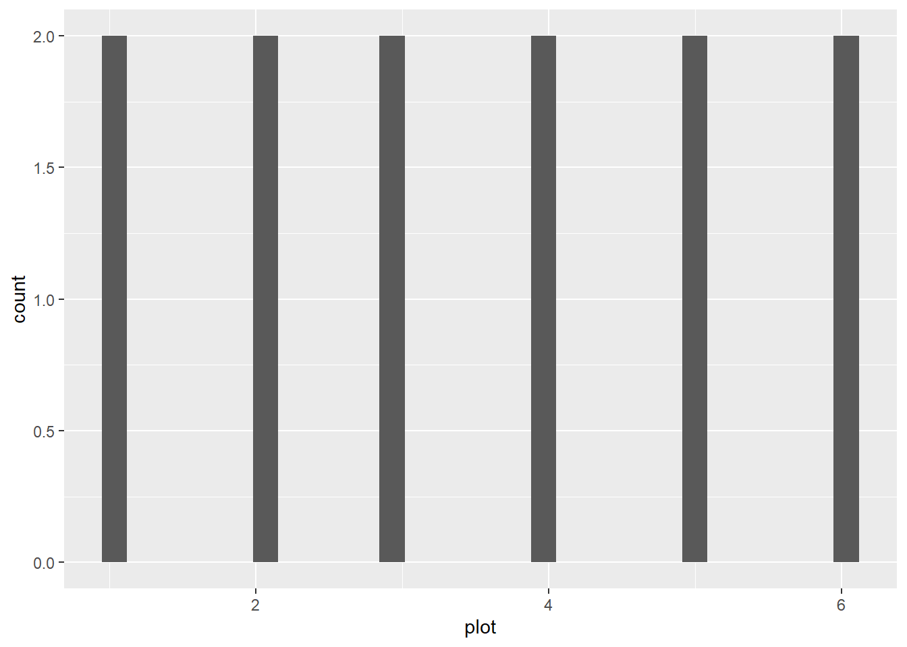
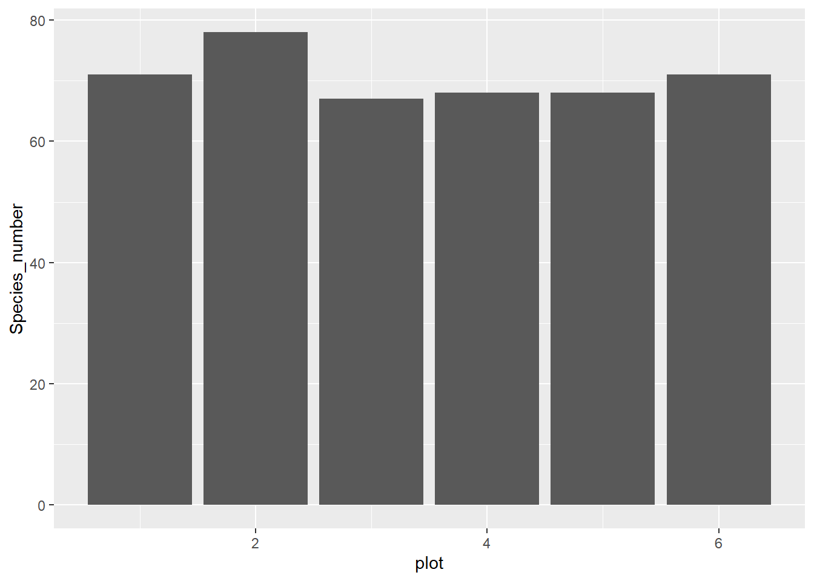
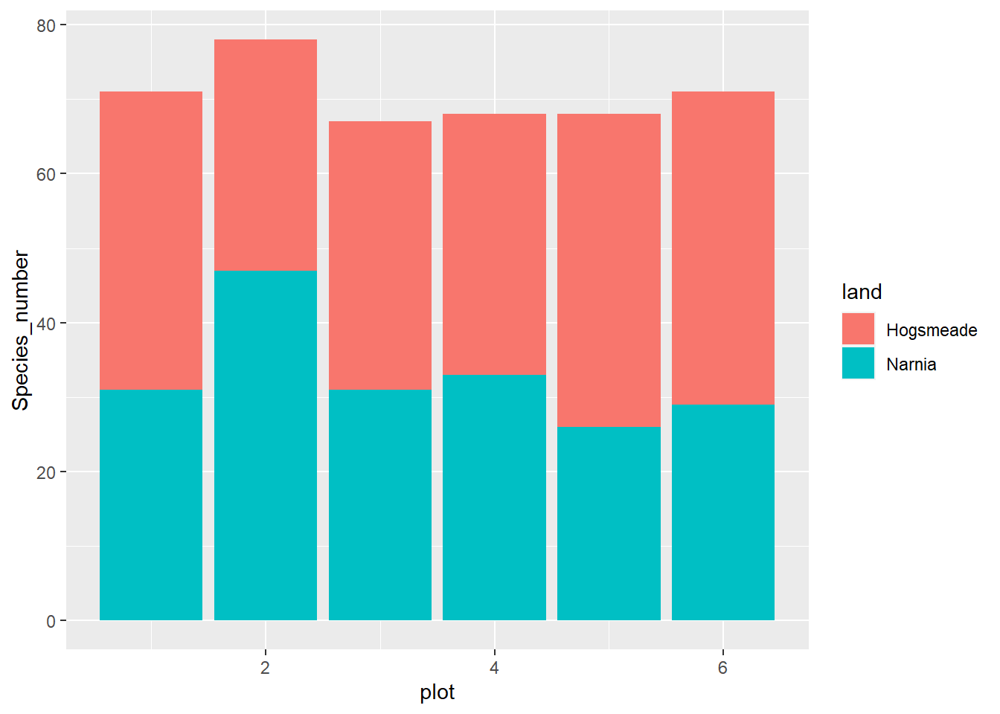
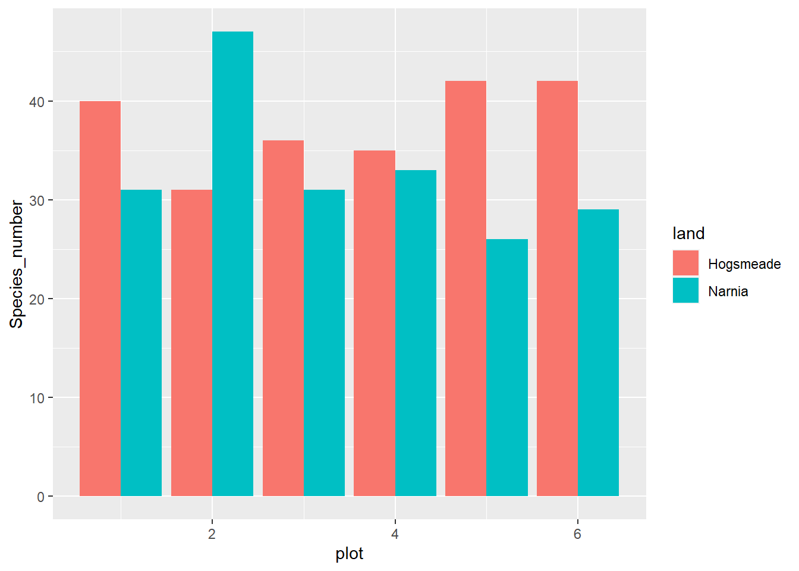
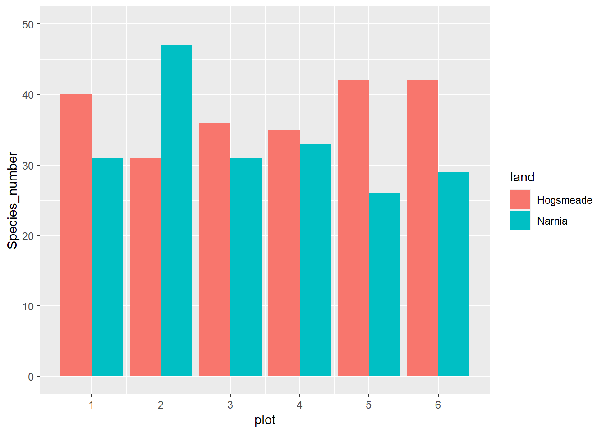
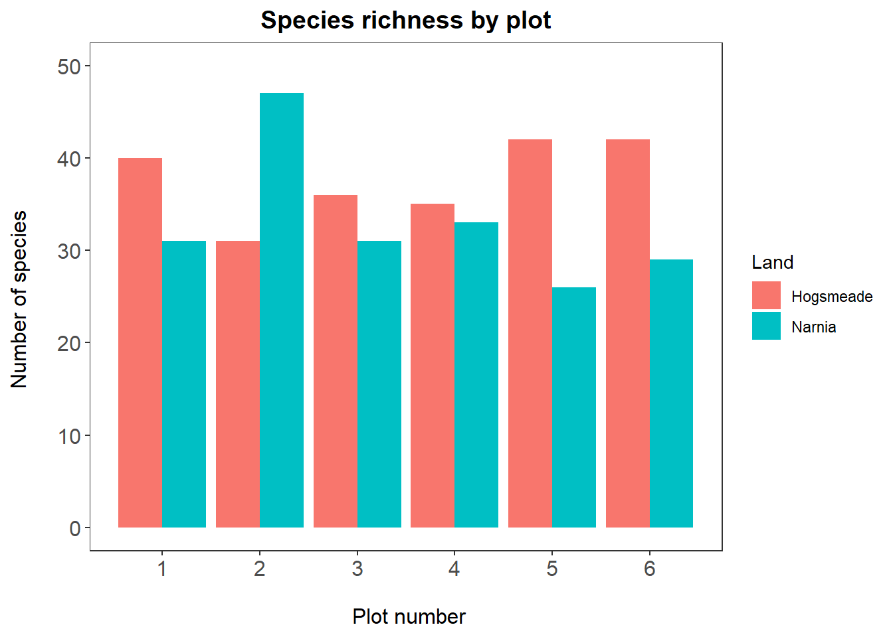

── Attaching core tidyverse packages ──────────────────────── tidyverse 2.0.0 ──
✔ dplyr 1.1.3 ✔ readr 2.1.4
✔ forcats 1.0.0 ✔ stringr 1.5.0
✔ ggplot2 3.4.4 ✔ tibble 3.2.1
✔ lubridate 1.9.3 ✔ tidyr 1.3.0
✔ purrr 1.0.2
── Conflicts ────────────────────────────────────────── tidyverse_conflicts() ──
✖ dplyr::filter() masks stats::filter()
✖ dplyr::lag() masks stats::lag()
ℹ Use the conflicted package (<http://conflicted.r-lib.org/>) to force all conflicts to become errors
Read in data
#|{.nowarn}magic_veg <-read_csv("magic_veg.csv")
New names:
Rows: 5898 Columns: 8
── Column specification
──────────────────────────────────────────────────────── Delimiter: "," chr
(3): land, species, id dbl (5): ...1, plot, year, abundance, height
ℹ Use `spec()` to retrieve the full column specification for this data. ℹ
Specify the column types or set `show_col_types = FALSE` to quiet this message.
• `` -> `...1`
We will first explore our dataset using the str() function, which shows what type each variable is. What is the dataset made of?
`stat_bin()` using `bins = 30`. Pick better value with `binwidth`.

Note that putting your entire ggplot code in brackets () creates the graph and then shows it in the plot viewer. Uh, oh… That’s a weird histogram!
This is the common way of making a histogram, when you have one observation per row and the histogram tallies them for you. But you can immediately see that it doesn’t look right, because we are working with summarised data. You therefore need to tell R that you already know how many species are in each plot. You do that by specifying the stat argument:
(hist <-ggplot(species_counts, aes(x = plot, y = Species_number)) +geom_histogram(stat ="identity"))
Warning in geom_histogram(stat = "identity"): Ignoring unknown parameters:
`binwidth`, `bins`, and `pad`

# Note: an equivalent alternative is to use geom_col (for column), which takes a y value and displays it(col <-ggplot(species_counts, aes(x = plot, y = Species_number)) +geom_col() )
That looks a bit better, but it still seems to have far too many species. That’s because plots from each land are being grouped together. We can separate them by introducing a colour code, and make a stacked bar plot like this:
#|{.nowarn}(hist <-ggplot(species_counts, aes(x = plot, y = Species_number, fill = land)) +geom_histogram(stat ="identity"))
Warning in geom_histogram(stat = "identity"): Ignoring unknown parameters:
`binwidth`, `bins`, and `pad`

# Remember that any aesthetics that are a function of your data (like fill here) need to be INSIDE the aes() brackets.
And if we want to make the columns to appear side by side rather than being stacked, you add position = "dodge" to the geom’s arguments.
#|{.nowarn}(hist <-ggplot(species_counts, aes(x = plot, y = Species_number, fill = land)) +geom_histogram(stat ="identity", position ="dodge"))
Warning in geom_histogram(stat = "identity", position = "dodge"): Ignoring
unknown parameters: `binwidth`, `bins`, and `pad`

Fixing the scale
#|{.nowarn}(hist <-ggplot(species_counts, aes(x = plot, y = Species_number, fill = land)) +geom_histogram(stat ="identity", position ="dodge") +scale_x_continuous(breaks =c(1,2,3,4,5,6)) +scale_y_continuous(limits =c(0, 50)))
Warning in geom_histogram(stat = "identity", position = "dodge"): Ignoring
unknown parameters: `binwidth`, `bins`, and `pad`

Add titles, subtitles, captions and axis labels
(hist <-ggplot(species_counts, aes(x = plot, y = Species_number, fill = land)) +geom_histogram(stat ="identity", position ="dodge") +scale_x_continuous(breaks =c(1,2,3,4,5,6)) +scale_y_continuous(limits =c(0, 50)) +labs(title ="Species richness by plot", subtitle ="In the magical lands",caption ="Data from the Ministry of Magic", x ="\n Plot number", y ="Number of species \n",# \n adds space before x and after y axis textfill ="Land") # Change the legend title to "Land" )
Warning in geom_histogram(stat = "identity", position = "dodge"): Ignoring
unknown parameters: `binwidth`, `bins`, and `pad`
[Important] Take Full Control of Your Plot!
You have the power to customize every aspect of your plot, and one way to do this is by using the theme() function in ggplot2. You can adjust a wide range of visual elements to suit your preferences. We’ve previously introduced some theme elements in our tutorials, and here, we’ll focus on changing font sizes for axis labels, axis titles, and the plot title. But that’s just the tip of the iceberg; you can explore even more customizations like:
Font Styles: You can italicize or bold the text using face = 'italic' or face = 'bold', respectively.
Text Alignment: Center the title by specifying hjust = 0.5.
Change the plot background
Adding theme_bw() to our plot removes the grey background and replaces it with a white one. There are various other themes built into RStudio, but we personally think this is the cleanest one.
#|{.nowarn}(hist <-ggplot(species_counts, aes(x = plot, y = Species_number, fill = land)) +geom_histogram(stat ="identity", position ="dodge") +scale_x_continuous(breaks =c(1,2,3,4,5,6)) +scale_y_continuous(limits =c(0, 50)) +labs(title ="Species richness by plot", x ="\n Plot number", y ="Number of species \n",fill ="Land") +theme_bw() +theme(panel.grid =element_blank(), axis.text =element_text(size =12), axis.title =element_text(size =12), plot.title =element_text(size =14, hjust =0.5, face ="bold")))
Warning in geom_histogram(stat = "identity", position = "dodge"): Ignoring
unknown parameters: `binwidth`, `bins`, and `pad`

Fix the legend and customise the colours
#|{.nowarn}(hist <-ggplot(species_counts, aes(x = plot, y = Species_number, fill = land)) +geom_histogram(stat ="identity", position ="dodge") +scale_x_continuous(breaks =c(1,2,3,4,5,6)) +scale_y_continuous(limits =c(0, 50)) +scale_fill_manual(values =c("rosybrown1", "#deebf7"), # specifying the coloursname ="Land of Magic") +# specifying title of legendlabs(title ="Species richness by plot", x ="\n Plot number", y ="Number of species \n") +theme_bw() +theme(panel.grid =element_blank(), axis.text =element_text(size =12), axis.title =element_text(size =12), plot.title =element_text(size =14, hjust =0.5, face ="bold"), plot.margin =unit(c(0.5,0.5,0.5,0.5), units = , "cm"), legend.title =element_text(face ="bold"),legend.position ="bottom", legend.box.background =element_rect(color ="grey", size =0.3)))
Warning in geom_histogram(stat = "identity", position = "dodge"): Ignoring
unknown parameters: `binwidth`, `bins`, and `pad`
Warning: The `size` argument of `element_rect()` is deprecated as of ggplot2 3.4.0.
ℹ Please use the `linewidth` argument instead.